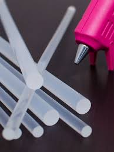

LAPICERO HECHO CON TECLAS
Materiales
 Teclado obsoleto(que no se puede reparar)
Teclado obsoleto(que no se puede reparar) Destornillador
Destornillador- Silicona en barra
 Lata
Lata- Cortadora
 Prensa
Prensa Removedor de superfices
Removedor de superfices
Instrucciones
- Con el destornillador abrimos el teclado para poder sacar las teclas
- Al igual que con este sacaremos tecla por tecla
- Despues de este proceso utilizaremos la cortadora para sacar las irregularidades de la tecla para aderirse a cualquier superficie
- Para cortar mas facil y con seguridad , utilizamos una prensa
- Luego de cortar las teclas si es posible lo limpiamos con el liquido "Removedor de superficies"(manejarlo con guantes) para que se vea brillante
- Y por ultimo con la silicona en barra lo aderimos a la lata.